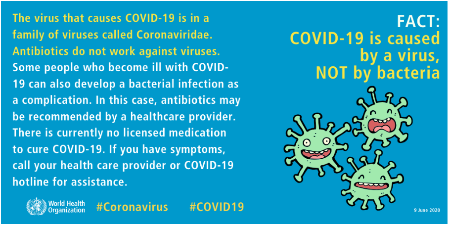

The virus that causes COVID-19 is in a family of viruses called Coronaviridae. Antibiotics do not work against viruses. Some people who become ill with COVID-19 can also develop a bacterial infection as a complication.
In this case, antibiotics may be recommended by a health care provider.
There is currently no licensed medication to cure COVID-19. If you have symptoms, call your health care provider or COVID-19 hotline for assistance.
The recent outbreak began in Wuhan, a city in the Hubei province of China. Reports of the first COVID-19 cases started in December 2019.
Many health experts believe that the new strain of coronavirus likely originated in bats or pangolins.
The first transmission to humans was in Wuhan, China. Since then, the virus has mostly spread through person-to-person contact.
Viruses, and the diseases they cause, often have different names. For example, HIV is the virus that causes AIDS. People often know the name of a disease, but not the name of the virus that causes it.
There are different processes, and purposes, for naming viruses and diseases.
Viruses are named based on their genetic structure to facilitate the development of diagnostic tests, vaccines and medicines. Virologists and the wider scientific community do this work, so viruses are named by the
International Committee on Taxonomy of Viruses (ICTV).
Diseases are named to enable discussion on disease prevention, spread, transmissibility, severity and treatment. Human disease preparedness and response is WHO role, so diseases are officially named by WHO in the
International Classification of Diseases (ICD).
WHO announced COVID-19 as the name of this new disease on 11 February 2020, following guidelines previously developed with the World Organisation for Animal Health (OIE) and the Food and Agriculture Organization of
the United Nations (FAO).
Infection with the new coronavirus (severe acute respiratory syndrome coronavirus 2, or SARS-CoV-2) causes coronavirus disease 2019 (COVID-19).
The virus that causes COVID-19 spreads easily among people, and more continues to be discovered over time about how it spreads. Data has shown that it spreads mainly from person to person among those in close contact (within about 6 feet, or 2 meters). The virus spreads by respiratory droplets released when someone with the virus coughs, sneezes, breathes, sings or talks. These droplets can be inhaled or land in the mouth, nose or eyes of a person nearby.
In some situations, the COVID-19 virus can spread by a person being exposed to small droplets or aerosols that stay in the air for several minutes or hours called airborne transmission. It's not yet known how common it is for the virus to spread this way.It can also spread if a person touches a surface or object with the virus on it and then touches his or her mouth, nose or eyes, although this isn't considered to be a main way it spreads.
Risk factors for COVID-19 appear to include: